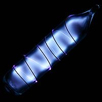

Numero atomico: 54
Massa atomica: 131,3
Temperatura di fusione (°C): -112
Temperatura di ebollizione (°C): -107
Energia di prima ionizzazione (kj/mol): 1170
Elettronegatività (secondo Pauling): 2,60
Densità: 5,90
Numeri di ossidazione: --
Configurazione elettronica: 1s2, 2s2, 2p6, 3s2, 3p6, 3d10, 4s2, 4p6, 4d10, 5s2 5p6
Maggiori Informazioni